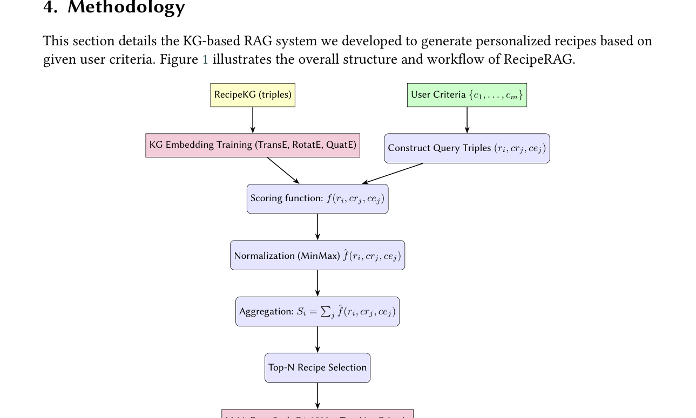
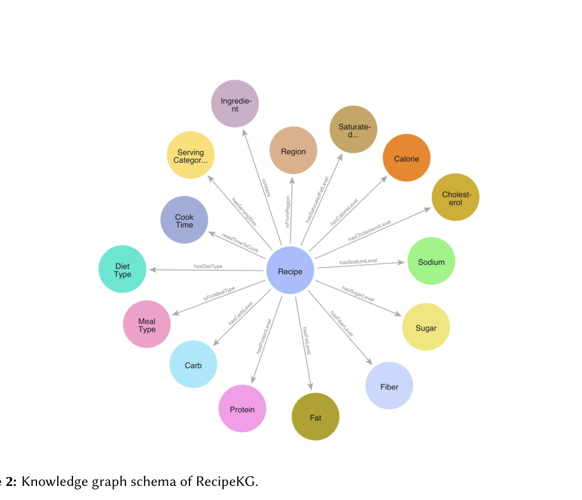

Julie Loesch · Emin Durmuş · Remzi Celebi
Trình bày theo cấu trúc hội nghị: bối cảnh → vấn đề → dữ liệu → phương pháp → thí nghiệm → kết quả → kết luận.
Vì sao sinh công thức món ăn cá nhân hóa dưới nhiều ràng buộc là khó?
RecipeKG + KGE retrieval + LLM generation tạo thành RecipeRAG.
So sánh TransE, RotatE, QuatE với GTE-Large và MiniLM.
Đánh giá điểm mạnh, hạn chế, khả năng ứng dụng và hướng phát triển.
Nhiều ràng buộc có thể xung đột: ít carb, giàu protein, ăn chay, nhanh, nguyên liệu cụ thể.
Khớp từ khóa không hiểu quan hệ giữa nguyên liệu, phương pháp nấu và dinh dưỡng.
Có thể sinh công thức thiếu bước, thay thế nguyên liệu không an toàn hoặc không khả thi.
Khó tối ưu nhiều tiêu chí cùng lúc.
GISMo, SHARE hỗ trợ thay thế/chỉnh sửa nhưng còn hạn chế về độ chính xác, taste/function, tương tác.
Thiếu tri thức có cấu trúc, độ tin cậy thấp khi yêu cầu phức tạp.
Embedding văn bản khó biểu diễn ràng buộc tổ hợp có cấu trúc.
Xây dựng knowledge graph từ Food.com, làm giàu bằng nhãn ngữ nghĩa về dinh dưỡng, chế độ ăn, vùng miền, bữa ăn, phương pháp nấu.
Truy hồi công thức từ knowledge graph rồi dùng LLM sinh công thức cá nhân hóa.
Biến recommendation thành bài toán dự đoán liên kết đa tiêu chí, thay vì chỉ so khớp trực tiếp query–recipe.
RecipeGPT, GPT-2, LLaVA-Chef, mô hình counterfactual và content planning tập trung sinh/chỉnh bước nấu.
Knowledge graph, embedding, Doc2Vec, LSTM/N-gram được dùng để gợi ý hoặc thay thế nguyên liệu.
Chuyển đổi vùng miền, tối ưu dinh dưỡng, món chay, chỉnh sửa recipe theo ràng buộc.
Điểm khác biệt: RecipeRAG nhấn mạnh truy hồi bằng KG embedding cho nhiều tiêu chí cùng lúc, sau đó mới sinh bằng LLM.
| Category | Ý nghĩa | Ví dụ |
|---|---|---|
| Cook Time | Thời gian cần để nấu | < 30 phút |
| Recipe Servings | Số khẩu phần | 1–4 servings |
| Diet Type | Chế độ ăn | Vegetarian, Lactose Free |
| Healthy Type | Đánh giá dinh dưỡng | High Protein, High Fat |
| Region | Phong cách ẩm thực | Asia |
| Meal Type | Loại bữa ăn | Breakfast, Lunch |
Các tiêu chí vừa có dạng dinh dưỡng, vừa có dạng hành vi nấu ăn, vùng miền và nguyên liệu. Đây là lý do paper chọn biểu diễn có cấu trúc bằng knowledge graph.
Truy hồi theo tổ hợp tiêu chí từ 1 đến 5. Với tổ hợp lớn, dùng stratified sampling và Freedman–Diaconis rule để cân bằng phân phối số recipe khớp.
Truy hồi theo nguyên liệu. Lấy 412 nguyên liệu đại diện từ 1,646 nguyên liệu bằng quantile binning và stratified sampling.
Random tiêu chí từ test set retrieval, chọn 2–5 tiêu chí; với nguyên liệu chỉ dùng nhóm tần suất cao để sinh công thức.
| Set size | Criteria: all | Criteria: sampled | Ingredients: all | Ingredients: sampled |
|---|---|---|---|---|
| 1 | 44 | 44 | 412 | 412 |
| 2 | 801 | 793 | 84,666 | 9,096 |
| 3 | 7,924 | 3,671 | 11,571,020 | 33,133 |
| 4 | 46,835 | 18,091 | 1,183,136,795 | 47,692 |
| 5 | 170,268 | 46,616 | — | — |
Độ khó tăng theo cấp số tổ hợp: càng nhiều tiêu chí, càng cần mô hình hiểu cấu trúc thay vì chỉ similarity văn bản.

Workflow gồm hai phần: KG-based retrieval để chọn Top-N recipe và LLM DeepSeek-R1-0528 để sinh recipe mới theo tiêu chí.

Recipe là nút trung tâm, liên kết tới ingredient, region, diet type, meal type, cook time, nutrition levels, cooking method và nhiều thuộc tính khác.
TransE, RotatE, QuatE học embedding cho entity/relation.
Tạo triple giữa recipe candidate và từng tiêu chí.
Dùng scoring function đánh giá plausibility.
MinMax đưa điểm về [0,1] theo từng tiêu chí.
Cộng điểm để xếp hạng Top-N recipe.
Mô hình dịch chuyển: relation như phép tịnh tiến trong không gian embedding.
Relation như phép quay trong không gian phức; paper dùng RotatE làm retrieval chính cho generation.
Dùng quaternion để mã hóa entity và relation, mạnh trong biểu diễn quan hệ phức.
Baseline text embedding tổng quát, huấn luyện contrastive nhiều giai đoạn.
Sentence-transformers baseline, tối ưu cho semantic search và clustering.
Hits@k: tỉ lệ ví dụ dương xuất hiện trong top-k.
MRR: reciprocal rank trung bình của item liên quan đầu tiên.
LLM-as-a-judge dùng Mistral Small 3.2 24B, chấm 1–5 theo Satisfiability và Feasibility.
So sánh ba cấu hình generation: RAG(RotatE), RAG(MiniLM), No RAG.
RotatE/QuatE vượt xa text embeddings, đặc biệt khi số tiêu chí tăng.
Ingredient retrieval khó hơn, nhưng RotatE vẫn giữ hiệu năng rất cao ở 3–4 nguyên liệu.
| Model | Feasibility | Satisfiability | Nhận xét |
|---|---|---|---|
| RAG (RotatE) | 4.01 ± 0.52 | 4.51 ± 0.50 | Đáp ứng tiêu chí tốt nhất, ổn định nhất. |
| RAG (MiniLM) | 3.81 ± 0.94 | 4.22 ± 0.88 | Khá hơn No RAG về ổn định nhưng yếu hơn KG retrieval. |
| No RAG | 4.04 ± 1.07 | 4.22 ± 1.03 | Feasibility nhỉnh hơn một chút nhưng biến động lớn. |
KG-based retrieval giúp LLM bám sát tiêu chí hơn, dù LLM không truy hồi đôi khi vẫn sinh món “có vẻ dễ làm”.
Hiệu năng giảm khi số tiêu chí tăng, chứng tỏ multi-criteria retrieval là bài toán khó. Tuy nhiên KGE vẫn giữ lợi thế lớn vì biểu diễn được quan hệ có cấu trúc.
RAG(RotatE) đạt satisfiability cao và variance thấp, cho thấy tri thức có cấu trúc giúp output nhất quán và phù hợp ràng buộc hơn.
Kết luận trung tâm: structured knowledge là thành phần quan trọng để làm RAG đáng tin cậy hơn trong tác vụ có nhiều ràng buộc.
Kết hợp KG embeddings với LLM để sinh recipe cá nhân hóa.
Xây từ Food.com, chứa quan hệ giữa recipe và các thuộc tính dinh dưỡng/ẩm thực.
Vượt TransE, GTE-Large, MiniLM, đặc biệt khi ràng buộc tăng.
RecipeRAG tạo cầu nối giữa recipe truyền thống và nhu cầu dinh dưỡng/cá nhân hóa đang thay đổi.
Ý tưởng rõ, pipeline phù hợp KG-RAG, test retrieval có phân tầng độ khó, kết quả KGE rất thuyết phục, có so sánh với text embedding và No RAG.
Generation đánh giá bằng LLM-as-a-judge nên phụ thuộc judge; chưa có user study; RecipeKG chỉ từ Food.com; chưa phân tích sâu an toàn thực phẩm, allergy, chi phí, thời gian inference.
Câu hỏi Q&A nên xoáy vào: vì sao RotatE mạnh hơn, LLM judge có đáng tin không, KG có cập nhật được theo người dùng thật không?
Học từ đánh giá thực tế của người dùng.
Dị ứng, tương tác thực phẩm, quy tắc an toàn.
Giải thích vì sao recipe được chọn.
Cập nhật nguyên liệu, văn hóa, mùa vụ, giá cả.
Làm rõ KG, KGE scoring, multi-criteria retrieval, vai trò của LLM.
Dùng workflow, schema KG, bảng kết quả, biểu đồ MRR thay vì đọc nguyên văn paper.
20 phút: 3 phút bối cảnh, 5 phút dữ liệu, 6 phút phương pháp, 4 phút kết quả, 2 phút phản biện.
Chuẩn bị câu trả lời về RotatE, RAG vs No RAG, LLM judge, hạn chế dataset.
Cảm ơn thầy/cô và các bạn đã lắng nghe.